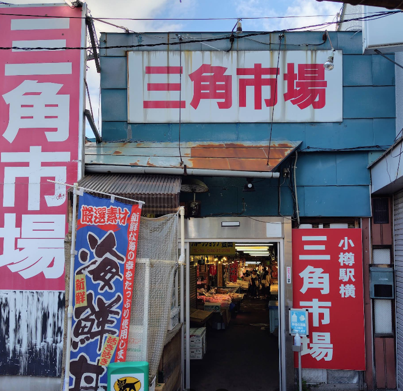
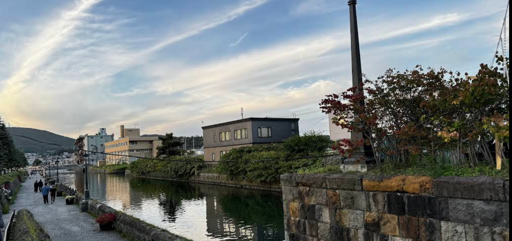
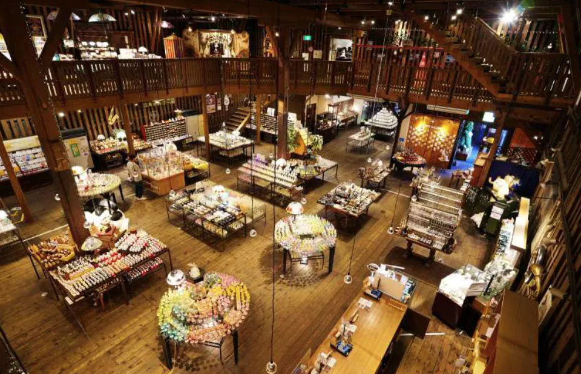
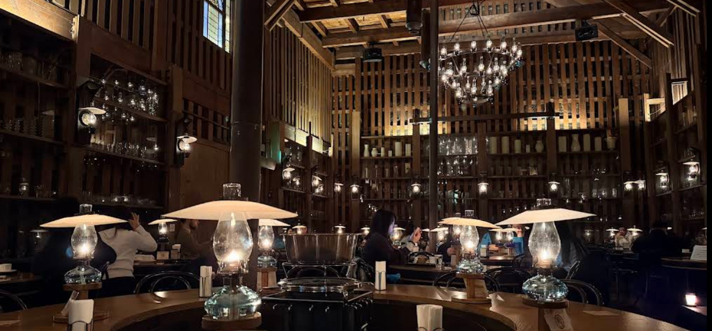
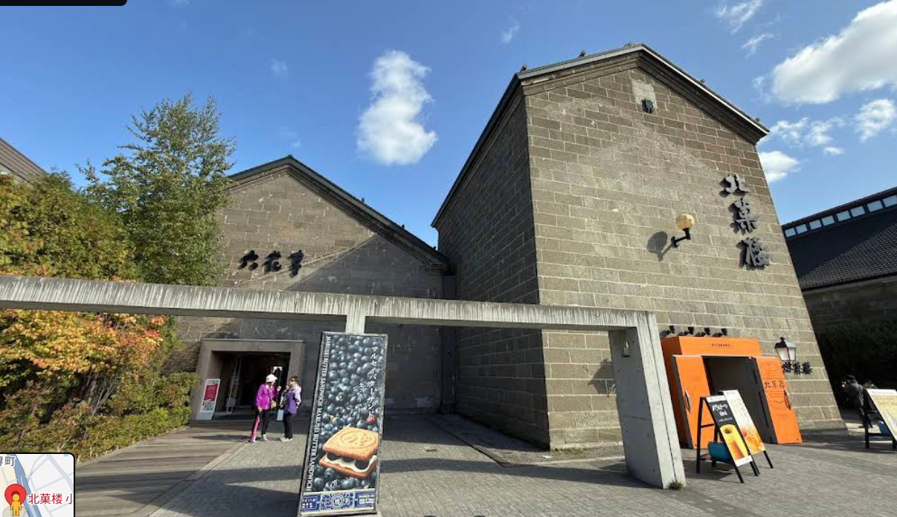

抵達、小樽散步、札幌入住
第一天安排小樽作為抵達後的緩衝城市，景點集中、步行友善，適合邊吃邊逛。
JR
甜點
伴手禮
航班07:35
主行程抵達新千歲機場
VZ570 台北桃園 02:50 起飛，07:35 抵達札幌千歲。
建議09:00
新千歲機場 → 小樽 JR
抓取出關、取行李與買票時間。抵達小樽後先往市場午餐方向移動。
建議10:30
三角市場
先用海鮮丼補充體力，再開始小樽散步。
建議11:40
小樽運河
沿運河散步拍照，天氣好時適合安排短暫咖啡休息。
建議12:30
小樽音樂盒堂、堺町通
主街區步行逛店，適合找小物、玻璃器皿與甜點。
建議13:30
北一硝子
玻璃工藝與小樽代表性購物點。
建議14:30
北菓楼 小樽本館、六花亭
甜點伴手禮集中採買，北菓楼與六花亭排在同一區塊。
移動16:30
小樽 → 札幌
搭 JR 回札幌，依現場體力調整晚餐或直接入住。
入住18:00
札幌 CHALEUR / Airbnb
整理行李，準備隔天札幌市區行程。
景點、逛街與美食

三角市場
JR 小樽站步行約 1 分鐘的小型海鮮市場，以新鮮海產與海鮮丼聞名。市場不大但人氣很旺，適合作為抵達小樽後的第一站。
- 玩法先到人氣食堂抽號碼牌，再利用等候時間逛市場、比較價格；多人同行可分點不同海鮮。
- 必吃海鮮丼、海膽、干貝、鮭魚卵與帝王蟹，可依當日漁獲挑選。
- 提醒熱門店常需等候 40-60 分鐘，週末與中午更擁擠；價格不算便宜，通道狹窄，大件行李建議先寄放。

小樽運河
小樽經典水岸景點，歷史倉庫、瓦斯燈與運河倒影構成主要風景；白天清楚、傍晚更有氣氛。
- 玩法從淺草橋街園拍經典角度，再沿倉庫群散步；不搭船也可安排約 45-60 分鐘。
- 活動若想搭遊覽船，先確認班次與候位；只散步則可接續堺町通，不必在單一拍照點久留。
- 拍照橋上適合全景，日落後瓦斯燈與水面更有層次；中午前後通常人潮較多。

小樽音樂盒堂
由老建築改造的音樂盒本館，款式與旋律選擇非常多；門口蒸汽鐘與室內童話感是旅客最常提到的看點。
- 玩法先在門口看一輪蒸汽鐘演奏，再進本館按樓層逛；人多時先約好出口集合時間。
- 必買小型木盒、玻璃或角色造型音樂盒；購買前先試聽旋律與音色。
- 提醒本館觀光客多、商品價差大，挑選時確認機芯狀況與防震包裝，預留易碎品行李空間。

北一硝子
小樽代表性的玻璃工藝空間，三號館的石造倉庫、油燈氛圍與多樣玻璃器皿，比單純購物更值得慢慢看。
- 玩法先看三號館與油燈空間，再逛杯盤和生活器皿；遇到鋼琴演奏時可多留一會。
- 必買玻璃杯、醬油碟、筷架與季節色小物；送禮前先確認重量與防震包裝。
- 提醒館內部分區域光線較暗，易碎品也多；喜歡器皿可留 45-60 分鐘，否則抓重點逛即可。

北菓楼 小樽本館、六花亭
相鄰的北海道甜點名店，可一次完成伴手禮採買，也能在六花亭二樓配咖啡稍作休息。
- 玩法先到北菓楼試吃米果、買易售完泡芙，再到六花亭補餅乾並上二樓休息。
- 必買北菓楼夢不思議泡芙、帆立貝／甜蝦／昆布米果與年輪蛋糕；六花亭奶油葡萄夾心及單片甜點。
- 提醒泡芙與冷藏甜點適合當天吃；送禮品要確認保存期限，熱門時段結帳與咖啡座可能排隊。